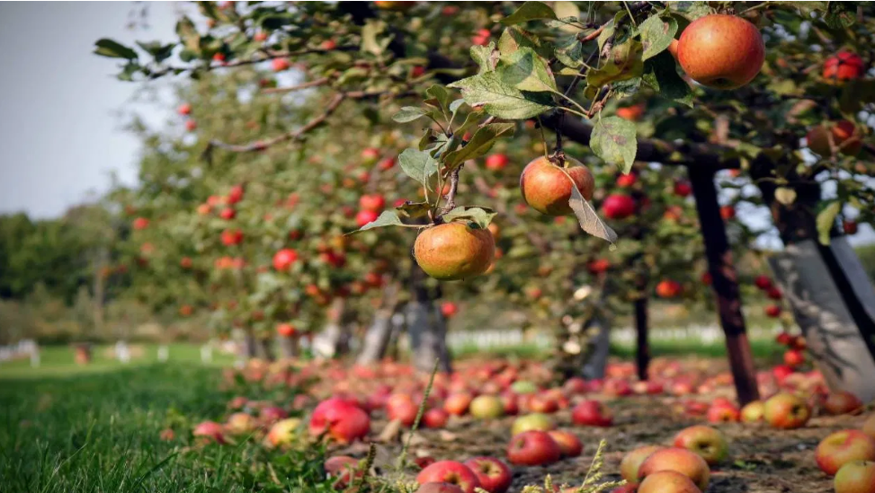

Fresh, Crispy, Heavenly.
100% Organic, vivid varieties of apples grown in aka The Heaven of Earth.
ABOUT US
Apple can be considered one of the most nutritious fruits. It can boost immunity (the ability to fight diseases), help withstand stress, and also contains bioactive compounds that are beneficial to human health. As the saying goes, 'An apple a day keeps you from the doctor', apple is a healthy fruit .
VARIETIES

Amber
This red, medium-sized fruit becomes fully ripe in mid-October. It is mostly grown in Shopian and Kulgam.

American Trel
A small, rounded, very crispy and sweet fruit variety that ripens in mid-September.

Red Delicious
A very popular and widely cultivated variety of apple that ripens in mid-September. Its flesh is greenish white, grainy and juicy.

Maharaej
A large apple with red and green color. It tastes a bit sour but sweetens with time and is available by late October.

Hazratbael
A quickly perishable variety that ripens in early July. It is the oldest variety of apples cultivated in the valley and is mostly consumed domestically

Golden Delicious
A variety with comparatively longer shelf life, it is crispy, juicy and has thick greenish-white flesh which turns golden upon ripening. It is available till January.
SERVICES

Fresh
We deliver fresh apples with a 100% guarantee of freshness.

Fast
We deliver your orders as fast as possible.

Satisfying
We guarantee 100% customer satisfaction.
BENEFITS
1. To remove the effects on the brain due to increasing age.
2. Dietary fibers are found in abundance in apple which helps in digestion.
3. Regular consumption of apples reduces the risk of type-2 diabetes.
4. Consuming apple is very good for the heart.
5. Constipation can be cured by regular consumption of apple...
6. Regular use of apple is also beneficial in controlling weight.
7. Regular use of apple removes many toxins present in the body...